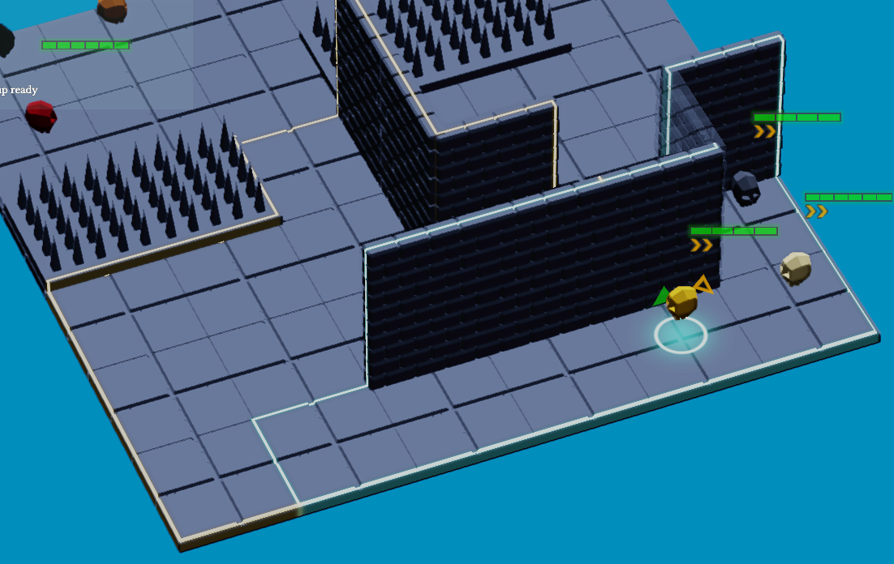
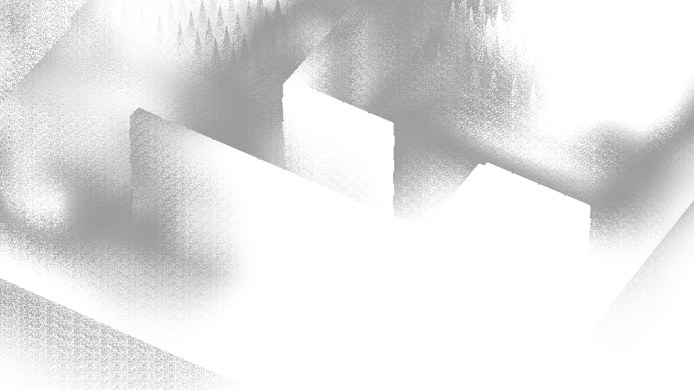
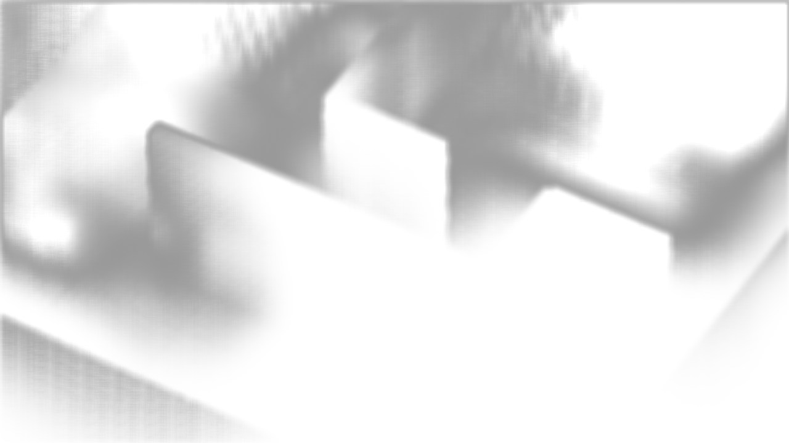
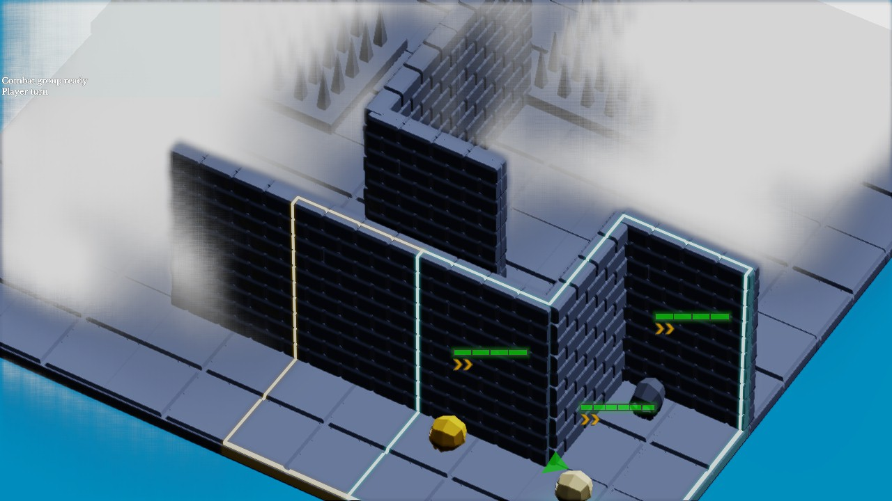
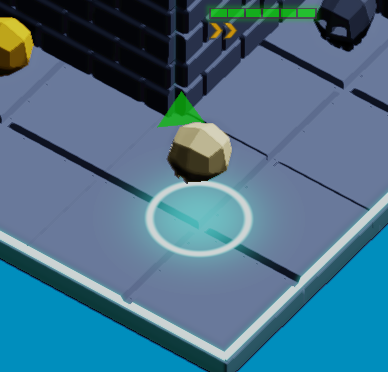
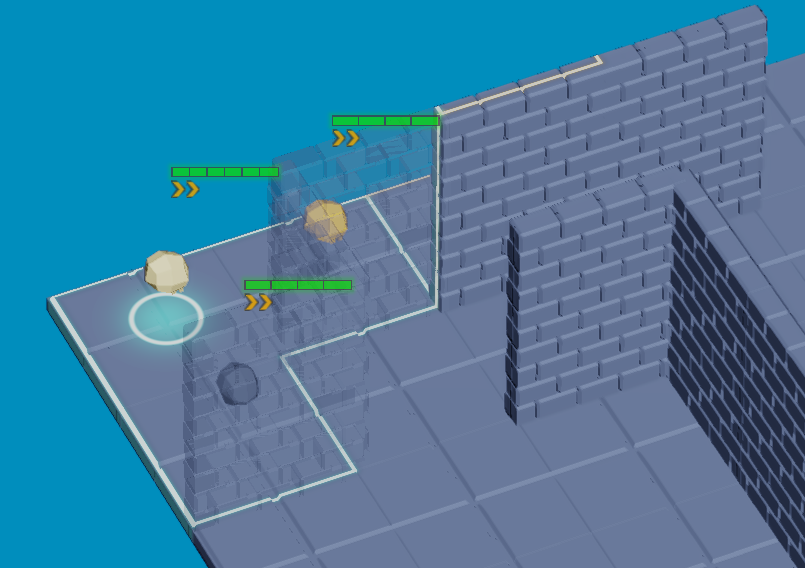

|
Lysa
0.0
Lysa 3D Engine
|
|
Lysa
0.0
Lysa 3D Engine
|
This page describes how to extend the rendering pipeline with custom GPU work: rendering phases, post-processing passes, shader-based materials, and custom render passes.
The renderer exposes several user-controllable insertion points. Three complementary mechanisms inject custom GPU work: rendering phases (lysa::RenderingPhase), post-processing compute passes (lysa::FullScreenCompute), and shader materials (lysa::ShaderMaterial). All three are orchestrated by lysa::Renderer, which owns every pass of a frame and drives their execution.
A rendering phase is a named slot in the frame graph. At each phase the engine first runs the built-in lysa::ShaderMaterialPass (drawing the objects whose material targets that phase), then every custom pass (lysa::CustomRenderpass) registered for that same phase. The position of each phase in the frame is fixed by the lysa::RenderingPhase enumeration.
Post-processing passes are full-screen compute passes chained together: each reads the color image produced by the previous one and writes its own output image. They are inserted after the color and bloom passes, but before the anti-aliasing pass.
| Frame step | Value |
|---|---|
| Depth pre-pass | - |
| Shadow maps | - |
| Color pass (forward or deferred lighting) | - |
AFTER_LIGHTING_PASS | 0 |
AFTER_COLOR_PASS (DEFAULT) | 1 |
| Transparency pass (OIT) | - |
AFTER_TRANSPARENCY_PASS | 2 |
| Bloom pass | - |
AFTER_BLOOM_PASS | 3 |
| Post-processing compute (chain) | - |
AFTER_POSTPROCESSING_PASS | 4 |
| Anti-aliasing (FXAA / SMAA) | - |
AFTER_AA_PASS | 5 |
A rendering phase selects when, within the frame, a shader-based object or a custom pass is drawn. It is the common argument to all three mechanisms: a lysa::ShaderMaterial is bound to a phase at creation, and a lysa::CustomRenderpass is attached to a phase through lysa::Renderer::addRenderPass().
The phase determines which data is available and the resulting visual effect:
AFTER_LIGHTING_PASS : in deferred rendering, lighting is resolved but the image is not yet tonemapped or anti-aliased with TAA. Best for effects that must blend with the lit HDR scene (halos, additional volumetric contributions).AFTER_COLOR_PASS (the DEFAULT value) : all opaque objects are drawn and TAA have been applied, but transparency is not yet composited. The default choice, suited to opaque shader-driven objects that must stay below transparent elements.AFTER_TRANSPARENCY_PASS : the full scene (opaque + transparent) is composited. Use it for overlays that must sit after all scene content but before bloom.AFTER_BLOOM_PASS : Bloom effect have been applied, if enabled. Use it for overlays that must not have a automatic blooming effect.AFTER_POSTPROCESSING_PASS : the image is finalized without AA (tonemap). Use it for overlays that must be displayed without any post-processing effects or transparent objects that must show the overlays.AFTER_AA_PASS : the image is finalized (tonemap, AA). Suited to UI or debug elements that must not undergo image processing and stay sharp.On the implementation side, lysa::Renderer::renderCustomRenderPasses() selects the appropriate color target per phase: the raw target (selected in the lysa::RendererConfiguration) or current color target (generally the swap chain format). The lysa::ShaderMaterialPass for the phase runs first, then the custom passes in registration order.
The following creates a shader material rendered after transparency rather than at the default phase:
A post-processing pass is a full-screen compute effect deriving from lysa::FullScreenCompute. The renderer keeps an ordered list of these passes, executed after the color and bloom passes and before anti-aliasing. Each pass reads the color image produced by the previous one and writes its own output image: the chain is therefore built in the order of the lysa::Renderer::addPostprocessing() calls.
The base constructor takes the renderer configuration, the output format, the compiled compute shader name, and an optional data block (uniform) specific to the pass:
The shader receives a fixed set of inputs through a texture array, whose indices are exposed as constants: INPUT_BUFFER (HDR color), DEPTH_BUFFER, BLOOM_BUFFER, and two free slots OPT1_BUFFER / OPT2_BUFFER. The compute local workgroup size is TILE_SIZE = 16 and must stay consistent with the shader (postprocess.inc.slang).
The caller retains ownership of the pass, which must outlive the lysa::Renderer (typically declared as a scene member). The add order fixes the apply order. Example: a Gaussian blur followed by a desaturation.
lysa::Renderer::addPostprocessing() opens a command list, calls resize() on the pass to allocate its output image at the current extent, then appends the pointer to the list. The pass is ready for the next frame.
The uniform block passed at construction is re-uploaded every frame, so it is enough to modify the CPU-side struct. For resolution-dependent parameters, recompute them on the resize event:
A pass is identified by its compute shader name (compShaderName). Two overloads exist: by name, or by reference to the object (which reuses the name internally). A missing pass is silently ignored.
removePostprocessing(const std::string&): removing by name removes all matching passes.lysa::DisplayAttachment is a specialized post-processing pass that copies an internal attachment to the output. Use it to inspect a G-Buffer layer, ambient occlusion, a shadow map, or any intermediate result.
A lysa::ShaderMaterial binds custom Slang shaders (fragment and, optionally, vertex) to a surface, together with a set of float4 parameters. Unlike a post-processing pass, which acts on the whole image, a shader material is rendered per object, at the chosen rendering phase, by the matching lysa::ShaderMaterialPass.
The lysa::MaterialManager offers create() overloads. Specify the fragment shader, optionally the vertex shader, the number of exposed float4 parameters, and the rendering phase.
The number of parameters is fixed at creation: setParameter(index, value) writes into an existing slot, and getParameterCount() returns the capacity. Internally, parameters are stored in a global SSBO and re-uploaded on demand through uploadParameters().
Since parameters are plain CPU state synchronized to the GPU, animate them in the scene's processing loop, for example onPhysicsProcess():
pipeline_id derived from its shader pair. When the set of materials changes, lysa::Renderer::updatePipelines() rebuilds the graphics pipelines of the relevant ShaderMaterialPass from the pipeline-to-materials mapping provided by the SceneFrameData.A lysa::CustomRenderpass injects arbitrary GPU work (graphics or compute) at a specific phase. It derives from lysa::Renderpass and has a single obligation: implement render(). It runs after the built-in ShaderMaterialPass of the same phase.
The hooks inherited from lysa::Renderpass can also be overridden: resize(extent, commandList) to recreate resolution-dependent resources, and update(frameIndex) to refresh per-frame state. Both are no-ops by default.
The following skeleton declares a pass that draws a scene outline. The phase's color and depth targets are provided every frame:
Attach the pass to a phase. As with post-processing, the caller retains ownership and the pass must outlive the lysa::Renderer.
On registration, lysa::Renderer::addRenderPass() calls resize() on the pass to size it to the current extent, then appends it to the phase list. Every frame, these passes are executed by renderCustomRenderPasses() in registration order, after the phase's ShaderMaterialPass.
Removal is by reference and requires the same phase used to add it. A pass not registered for that phase is silently ignored.
The three mechanisms answer distinct needs:
| Mechanism | Scope | Add / remove |
|---|---|---|
| lysa::ShaderMaterial | Per object, at a phase | MaterialManager::create() / destroy() |
| lysa::CustomRenderpass | Free GPU work, at a phase | addRenderPass() / removeRenderPass() |
| lysa::FullScreenCompute<td> Whole image, post-process chain | addPostprocessing() / removePostprocessing() |
Common points: (1) the caller retains ownership of added passes, which must outlive the lysa::Renderer; (2) on add, the engine sizes the pass to the current extent through resize(); (3) the add order determines the execution order within a phase or the post-processing chain.
This section illustrates the mechanisms above with concrete cases from an imaginary game (isometric tactics). It features two full-screen custom render passes (ZoneOutlineRenderPass and FogOfWarRenderPass) and several shader materials driven from Lua (selection ring, highlight, transparency, health bars).
The ZoneOutlineRenderPass draws the glowing outline of zones where the player units can move (cyan) or dash (ligth yellow). It is a full-screen graphics pass: a full-screen triangle (quad.vert + draw(3)) reprojects each pixel into world space using depth and the inverse camera matrices, then tests its distance to the zone edges.

The constructor creates a descriptor layout (sampled depth, camera uniform, zones storage), a graphics pipeline with classic alpha blending, then allocates one FrameData per frame in flight (mapped camera uniform, staging + device buffer for the zones):
render() returns early if there is nothing to draw, writes the camera uniform (inverse projection and view), copies the zones from staging to the device buffer with the proper barriers, binds the depth received as a parameter, then draws the full-screen triangle. Note the barrier pair that transitions the color target from COMPUTE_READ to RENDER_TARGET_COLOR during the draw, and the depth from RENDER_TARGET_DEPTH to SHADER_READ, each transition being restored at the end of the pass:
The pass overrides resize() only to record the screen size (used for reprojection) and exposes a small slot-based gameplay API: addZone(...) returns a slot (or -1 if full) and removeZone(slot) frees it. The pass stays generic; gameplay logic drives its content:
The FogOfWarRenderPass combines several building blocks: it wraps an internal compute pass (FogOfWarCompute, deriving from lysa::FullScreenCompute) computing per-cell fog density, a blur pass (lysa::FullScreenCompute with a lysa::BlurData), then a graphics composition step (fog_of_war_composite.frag) that blends the result onto the image. It is the example of a custom pass orchestrating its own sub-passes.



render(). This keeps a multi-stage effect (compute + blur + composition) behind a single registration point, rather than exposing three separate passes to the renderer. The overridden update(frameIndex) only uploads visibility data when it changed (a cellsVisibilityDirty flag), avoiding a GPU transfer per frame when the game state is stable.Both passes are application members, constructed with the render target configuration and format, then registered at the AFTER_COLOR_PASS phase. The registration order (zone outline then fog) fixes their execution order. They are also enrolled in the resource registry to be reachable from Lua:
The camera is passed to the passes once the scene is ready (here from Lua, via the bindings): fog_pass:set_camera(camera) and zone_outline_pass:set_camera(camera).
The ring under the selected unit is a quad carrying a lysa::ShaderMaterial. The material is created with two float4 parameters and rendered at the AFTER_TRANSPARENCY_PASS phase so it shows above the scenery.

On the Lua side:
The fragment shader reads these parameters through shaderMaterialParameters[mat.parametersIndex + i]. Index 0 holds the color, index 1 decomposes radius, width, glow radius and gamma (the values pushed by set_parameter) :
This example use shader materials to show how the phase controls composition to add transparency to static object that hide the player units.

The transparency veil is rendered at AFTER_BLOOM_PASS, after the overlays:
The shader use the pre defined fonctions fetchColor() and getColor() to fetch the color of the material and the color of the mesh surface with the lightings and shadows applied, taken from the forward renderer shaders :
AFTER_AA_PASS to stay perfectly sharp as an overlay.  2.1.0
2.1.0